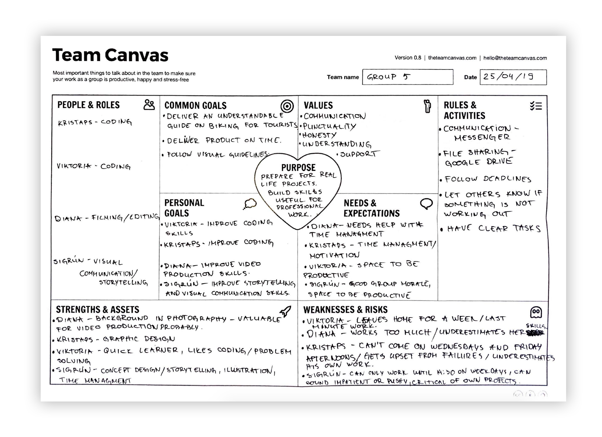
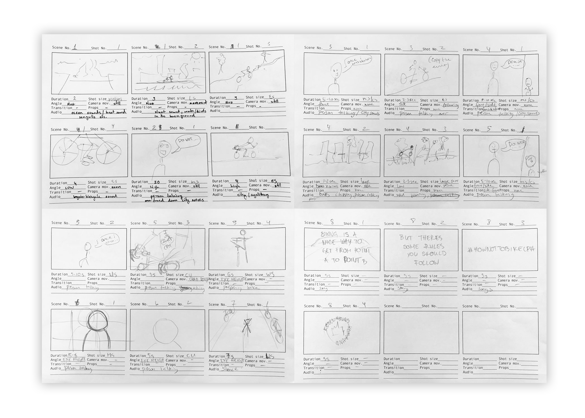
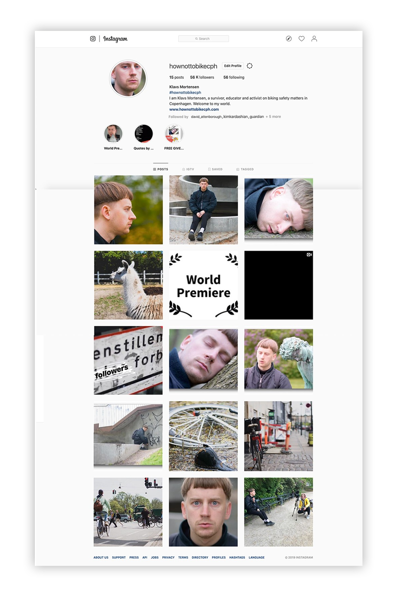

Cycle CPH
Goal
Our goal was to produce a simple website for The City of Copenhagen that would inform newcomers-young adults on the rules and opportunities of cycling in the city. We would produce an educational video as well as design the webpage based on the given style guide.
Process
Team canvas / Storyboard
An important part of kickstarting our project was to fill out team canvas. This shaped the outlines of our collaboration and defined our roles as well as our expectations from the project.
The first step in our project was to plan the production and film the video. Our initial idea was to bring forward real cycling experiences and advice from people of Copenhagen and communicate them by mixing interviews with street scenes related to cycling. We made a detailed storyboard before heading out in town to have a clear idea of what scenes we needed to film, what transitions, camera angles and movements we would have.
Production
During the filming process we got new ideas that would be better suited for our target group, therefore we decided to ditch the initial production for a new one. We repeated the preparation process by writing a new script, finding new locations.
In our new video we focused on storytelling which was supposed to start a fun and educational movement for cycling in the city. We made a character, Klavs Mortensen, and told his tragicomic story suited for our target group, as well as created a social media page on Instagram to reach a broader audience and keep the project alive.
Prototyping
Simultaneously with the video production, we designed and prototyped our webpage. It had to be simple, easy to navigate and visually appealing without unnecessary clusters of text to appeal to younger audiences. Therefore we made a one-page website, where the user would switch around different sections by clicking on a menu on the top of the page.
Click the image to open an XD Prototype.
Result
Our efforts resulted in a website that was visually appealing and easy to navigate. We had stayed close to the given style guide and produced a fun story by using different dramaturgical elements.
Click the image to open the website!